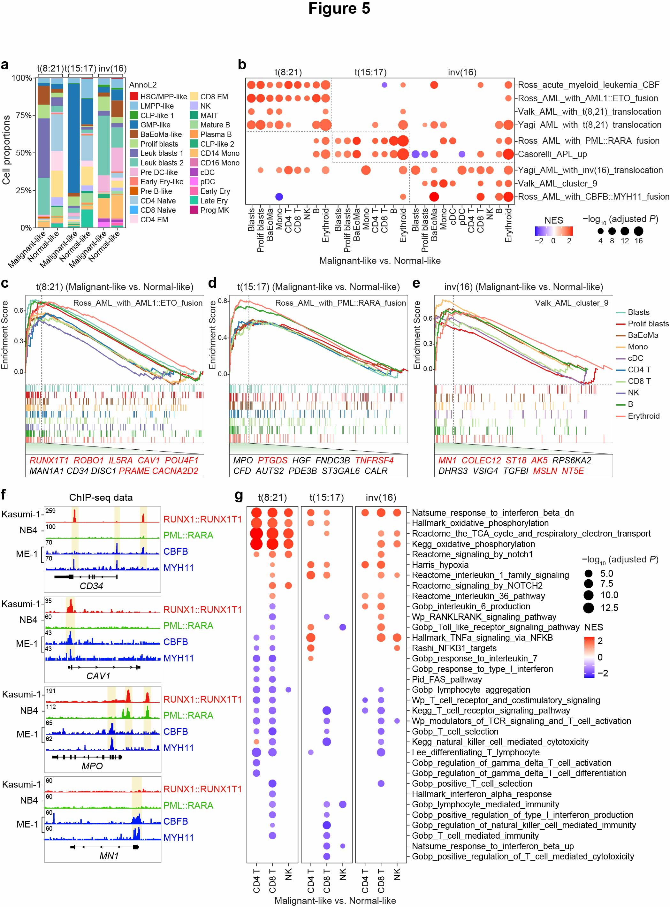

5 Figure 5
 Fig.5 | Fusion-target genes contribute to cross-lineage transcriptional aberrations in each AML subtype.
a, Bar charts illustrating the proportions of 27 various cell types (annoL2) within malignant-like and normal-like cells across t(8;21), t(15;17), and inv(16) AML subtypes. b, Dot plots showing the results of GSEA analysis using genes differentially expressed between malignant-like and normal-like cells across 11 broad cell types in t(8;21), t(15;17), and inv(16) AML BMs. Significantly enriched gene set terms are shown. c, GSEA plots showing that in various cell types of t(8;21) AML, differentially expressed genes between malignant-like and normal-like cells are significantly enriched among the target genes of RUNX1::RUNX1T1. The top 10 associated genes from the leading edges are highlighted at the bottom. d, GSEA plots showing that in various cell types of t(15;17) AML, differentially expressed genes between malignant-like and normal-like cells are significantly enriched among the target genes of PML::RARA. The top 10 associated genes from the leading edges are highlighted in the bottom panel. e, GSEA plots show that in various cell types of inv(16) AML, differentially expressed genes between malignant-like and normal-like cells are significantly enriched among the target genes of CBFB::MYH11. The top 10 associated genes from the leading edges are highlighted in the bottom panel. f, IGV tracks for selected gene loci, showcasing distinct ChIP-seq profiles for antibodies targeting the fusion peptide of RUNX1::RUNXT1 (red), PML::RARA (green), and different modalities of CBFB::MYH11 (blue). g, GSEA enrichment analysis revealing significantly enriched biological processes for T/NK cells in t(8;21), t(15;17), and inv(16) AML subtypes.
5.1 (a) Bar charts
## info & function
bar_plot_g.anno <- function(object){
mydata_g <- object %>%
group_by(group, seurat_clusters) %>% summarise(N = n()) %>%
group_by(group) %>% mutate(Freq = (N/sum(N)) * 100, Cumsum = cumsum(Freq),
group = factor(group, levels = g_list)) %>%
separate(group, c("FAB", NA), sep = ":", remove = F) %>%
mutate(FAB = factor(FAB, levels = g_raw))
p <- ggplot(mydata_g, aes(x = group, y = Freq/100, fill = seurat_clusters)) +
geom_col(width = 0.8) +
scale_fill_manual(values = annoL2_color) +
facet_grid(. ~ FAB, scales = "free", space = "free") +
scale_y_continuous(labels = scales::percent) + theme_bw() +
theme(legend.key.size = unit(0.35, "cm"), axis.text.x = element_text(angle = 45, hjust = 1),
panel.grid = element_blank(), panel.spacing = unit(0, "lines")) +
labs(x = "", y = "Percentage")
return(p)
}
annoL1_name <- c("Progs", "Progs_Prolif", "Progs_BaEoMa", "Mono", "cDC", "pDC", "T.NK", "B", "Erythroid")
annoL1_color <- c("#73C8B4", "#E31A1C", "#A65628", "#FDBF6F", "#9970AB", "#C2A5CF", "#6BAED6", "#33A02C", "#FB8072", "#C51B7D", "#D9D9D9")
anno_color.P <- c("#E31A1C", "#86C2E2", "#33A02C", "#1F78B4", "#A65628", "#B2DF8A", "#7570B3", "#73C8B4", "#F1B6DA", "#FB8072", "#D95F02")
anno_name.P <- c("HSC.MPP-like", "LMPP-like", "CLP-like1", "GMP-like", "BaEoMa-like", "Progs-Prolif", "NPW-high", "LSC17-high", "Pre-DC", "Erythroid", "Pre-B")
names(anno_color.P) <- anno_name.P
anno_color.O <- c("#A6CEE3", "#45B4FF", "#FDDAEC", "#FEE090", "#BEB9FF", "#1B9E77",
"#A1D99B", "#FF9B4F", "#27AD7B",
"#FDBF6F", "#DE77AE", "#AB47BC", "#FF77F8",
"#FD66AC", "#23C8A1", "#C51B7D", "#D9D9D9")
anno_name.O <- c("CD4Naive", "CD8Naive", "CD4EM", "CD8EM", "NK", "MAIT",
"MatureB", "PlasmaB", "CLP-like2",
"CD14Mono", "CD16Mono", "cDC", "pDC",
"EarlyE", "LateE", "ProgMK", "LowQual")
names(anno_color.O) <- anno_name.O
annoL2_color <- c(anno_color.P, anno_color.O)
annoL2_name <- c(anno_name.P, anno_name.O)
## load data
res_final <- read_rds(paste0(in_dir, "Table2.res_final.347846.rds"))
dat_final <- res_final %>%
filter(!is.na(SS.final_fus_group)) %>%
mutate(annoL2 = as.character(annoL2)) %>%
mutate(annoL2.new =
ifelse((annoL1 %in% annoL1_name[4:9] & annoL2 %in% "CLP-like"), "CLP-like2",
ifelse((annoL1 %in% annoL1_name[1:3] & annoL2 %in% "CLP-like"), "CLP-like1", annoL2))) %>%
mutate(annoL2.new = factor(annoL2.new, levels = annoL2_name),
seurat_clusters = annoL2.new) %>%
mutate(group = paste0(FAB, ":", SS.final_fus_group)) %>%
mutate(group = factor(group, levels = g_list)) %>%
mutate(orig.ident = paste0(SS.final_fus_group, ":", orig.ident))
p1 <- bar_plot_g.anno(object = dat_final %>% filter(!FAB %in% "HC"))
pdf(paste0(out_dir, "Fig5a.pdf"), width = 4.5, height = 4)
p1
dev.off()5.2 (b) Dot plots of GSEA results
idx.sel <- c(
"ROSS_ACUTE_MYELOID_LEUKEMIA_CBF",
"ROSS_AML_WITH_AML1_ETO_FUSION",
"VALK_AML_WITH_T_8_21_TRANSLOCATION",
"YAGI_AML_WITH_T_8_21_TRANSLOCATION",
"ROSS_AML_WITH_PML_RARA_FUSION",
"CASORELLI_ACUTE_PROMYELOCYTIC_LEUKEMIA_UP",
"YAGI_AML_WITH_INV_16_TRANSLOCATION",
"VALK_AML_CLUSTER_9",
"ROSS_AML_WITH_CBFB_MYH11_FUSION")
res_gsea <- read_rds(paste0(in_dir, "1.10.2.degs.scAML.sub_compare_gsea.1.HC2.rds"))
df <- rbindlist(res_gsea) %>%
filter(ID %in% idx.sel) %>%
filter(qvalue < 0.05) %>%
separate(group, c("FAB", "cluster"), sep = ":") %>%
mutate(cluster = factor(cluster, levels = my_g)) %>%
mutate(LGP = -log10(qvalue))
pdf(paste0(out_dir, "Fig5b.pdf"), width = 9.5, height = 0.21*length(idx.sel) + 1)
df %>%
mutate(NES = Seurat::MinMax(NES, -2.5, 2.5)) %>%
ggplot(aes_string(x = "cluster", y = "Description", size = "LGP", color = "NES")) +
geom_point() +
scale_y_discrete(position = "right") +
scale_color_gradient2(low = "blue", mid = "white", high = "red", name = "Normalized \nenrichment score",
limits = c(-2.5, 2.5)) +
scale_size(name = "-log10 (adj P-value)", range = c(1.5, 5)) +
facet_grid(~ FAB, scales = "free", space = "free") +
xlab(NULL) + ylab(NULL) + DOSE::theme_dose(8) + theme(legend.key.size = unit(0.3, "cm")) +
theme(
panel.grid = element_blank(),
axis.text.x = element_text(angle = 90, hjust = 1, vjust = 0.5))
dev.off()5.3 (c-e) GSEA plots across AML
anno_color <- c("#73C8B4", "#E31A1C", "#A65628", "#FDBF6F", "#9970AB", "#C2A5CF", "#1F78B4", "#B2DF8A", "#7570B3", "#33A02C", "#FB8072")
my_g <- c("Progs", "Progs_Prolif", "Progs_BaEoMa", "Mono", "cDC", "pDC", "CD4T", "CD8T", "NK", "B", "Erythroid")
dat_degs <- read.xlsx(paste0(in_dir, "1.10.1.degs.scAML.sub_compare.xlsx")) %>%
mutate(group = factor(group, levels = my_g),
cluster = factor(cluster, levels = c("M2AE", "M3PR", "M4CM")))
m2_gsdat_list <- list()
m2_gsplot_list <- list()
for(k in my_g[c(1:4, 7:11)]){
m2_res_gsea <- run_gsea_term(dat_degs %>% filter(cluster %in% "M2AE" & group %in% k),
ix_path = "ROSS_AML_WITH_AML1_ETO_FUSION")
m2_gsdat_list[[k]] <- gsInfo(m2_res_gsea, 1) %>% mutate(Description = k)
m2_gsplot_list[[k]] <- run_gsea_plot_v2(res = m2_res_gsea, my_title = k)
}
m3_idx <- c(1:4, 7:11)
m3_gsdat_list <- list()
m3_gsplot_list <- list()
for(k in my_g[c(1:4, 7:11)]){
m3_res_gsea <- run_gsea_term(dat_degs %>% filter(cluster %in% "M3PR" & group %in% k),
ix_path = "ROSS_AML_WITH_PML_RARA_FUSION")
m3_gsdat_list[[k]] <- gsInfo(m3_res_gsea, 1) %>% mutate(Description = k)
m3_gsplot_list[[k]] <- run_gsea_plot_v2(res = m3_res_gsea, my_title = k)
}
m4_gsdat_list <- list()
m4_gsplot_list <- list()
for(k in my_g[m4_idx]){
m4_res_gsea <- run_gsea_term(dat_degs %>% filter(cluster %in% "M4CM" & group %in% k),
ix_path = "VALK_AML_CLUSTER_9")
m4_gsdat_list[[k]] <- gsInfo(m4_res_gsea, 1) %>% mutate(Description = k)
m4_gsplot_list[[k]] <- run_gsea_plot_v2(res = m4_res_gsea, my_title = k)
}
m2_idx <- c(1:4, 7:11)
p1_a <- my_gseaplot2(rbindlist(m2_gsdat_list) %>%
filter(Description %in% my_g[m2_idx]) %>%
mutate(Description = factor(Description, levels = my_g[m2_idx])),
title = "M2\nROSS_AML_WITH_AML1_ETO_FUSION",
rel_heights = c(1, 0.5), subplots = 1:2, base_size = 10,
color = anno_color[m2_idx])
m3_idx <- c(1:3, 7:8, 10:11)
p1_b <- my_gseaplot2(rbindlist(m3_gsdat_list) %>%
filter(Description %in% my_g[m3_idx]) %>%
mutate(Description = factor(Description, levels = my_g[m3_idx])),
title = "M3\nROSS_AML_WITH_PML_RARA_FUSION",
rel_heights = c(1, 0.5), subplots = 1:2, base_size = 10,
color = anno_color[m3_idx])
m4_idx <- c(2:5, 8, 10:11)
p1_c <- my_gseaplot2(rbindlist(m4_gsdat_list) %>%
filter(Description %in% my_g[m4_idx]) %>%
mutate(Description = factor(Description, levels = my_g[m4_idx])),
title = "M4\nVALK_AML_CLUSTER_9",
rel_heights = c(1, 0.5), subplots = 1:2, base_size = 10,
color = anno_color[m4_idx])
pdf(paste0(out_dir, "Fig5c-e.pdf"), width = 12, height = 4)
wrap_plots(list(p1_a, p1_b, p1_c))
dev.off()5.4 (g) Dot plot in T/NK cells
df <- rbindlist(res_gsea) %>%
filter(grepl("CD4T|CD8T|NK", group)) %>%
filter(ID %in% idx.sel) %>%
filter(qvalue < 0.05) %>%
separate(group, c("FAB", "cluster"), sep = ":") %>%
mutate(cluster = factor(cluster, levels = my_g)) %>%
mutate(Description = factor(Description, levels = rev(idx.sel))) %>%
mutate(LGP = -log10(qvalue))
pdf(paste0(out_dir, "Fig5g.pdf"), width = 9, height = 0.13*length(idx.sel) + 1)
df %>%
mutate(NES = Seurat::MinMax(NES, -2.5, 2.5)) %>%
ggplot(aes_string(x = "cluster", y = "Description", size = "LGP", color = "NES")) +
geom_point() +
scale_y_discrete(position = "right") +
scale_color_gradient2(low = "blue", mid = "white", high = "red", name = "Normalized \nenrichment score",
limits = c(-2.5, 2.5)) +
scale_size(name = "-log10 (adj P-value)", range = c(1.5, 5)) +
facet_grid(~ FAB, scales = "free", space = "free") +
xlab(NULL) + ylab(NULL) + DOSE::theme_dose(8) + theme(legend.key.size = unit(0.3, "cm")) +
theme(
panel.grid = element_blank(),
axis.text.x = element_text(angle = 90, hjust = 1, vjust = 0.5))
dev.off()